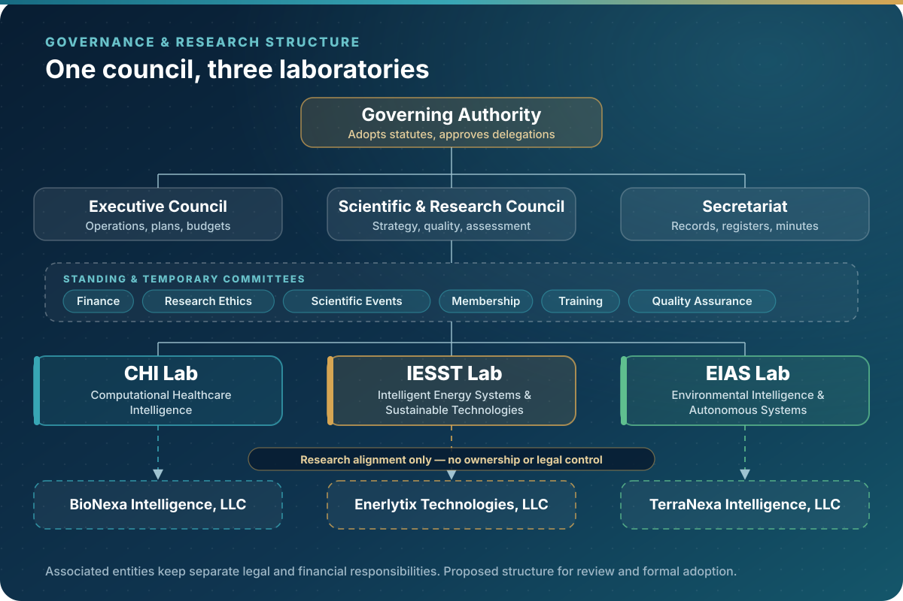
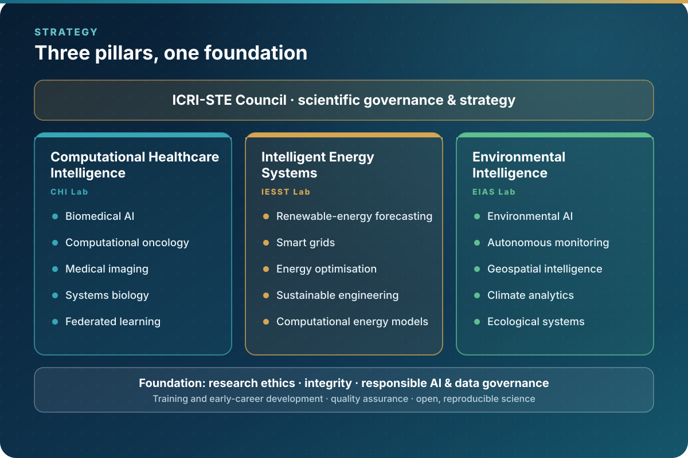
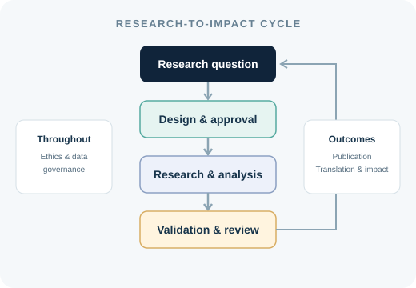
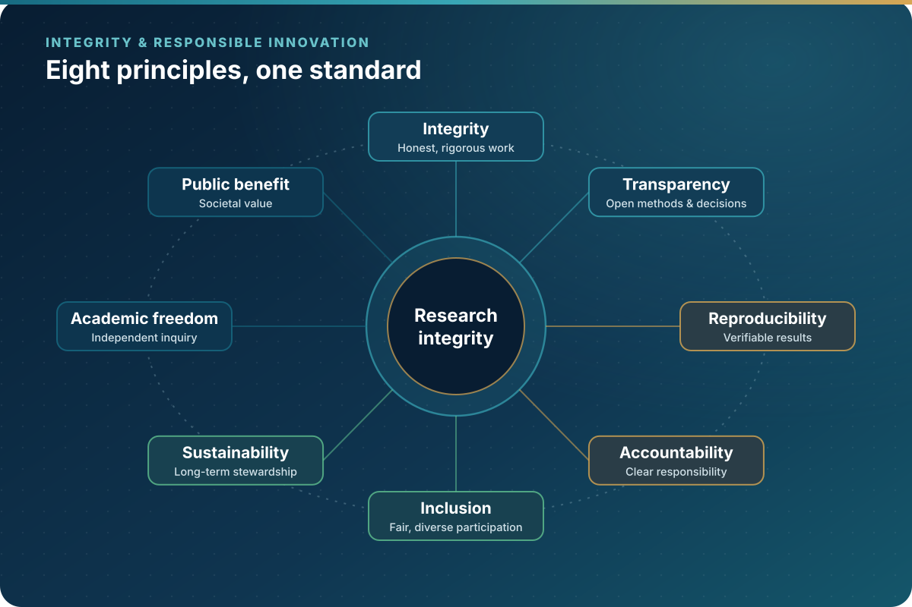
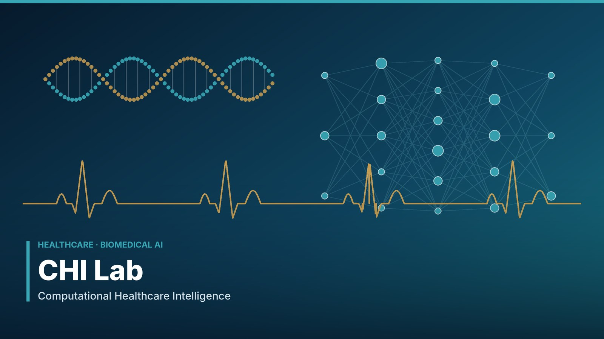
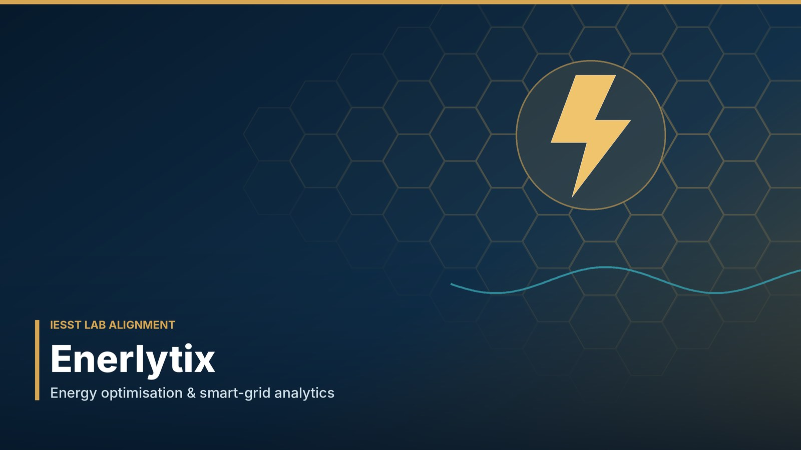
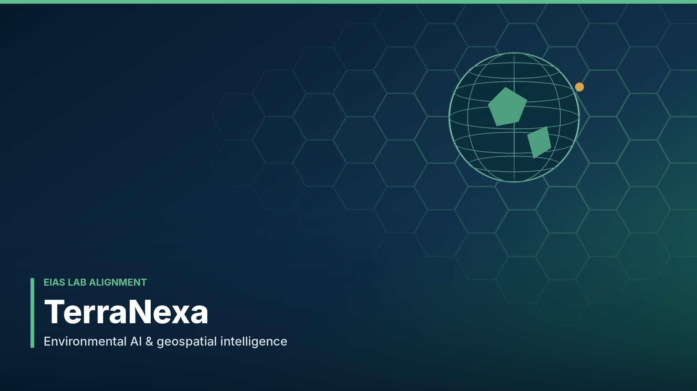
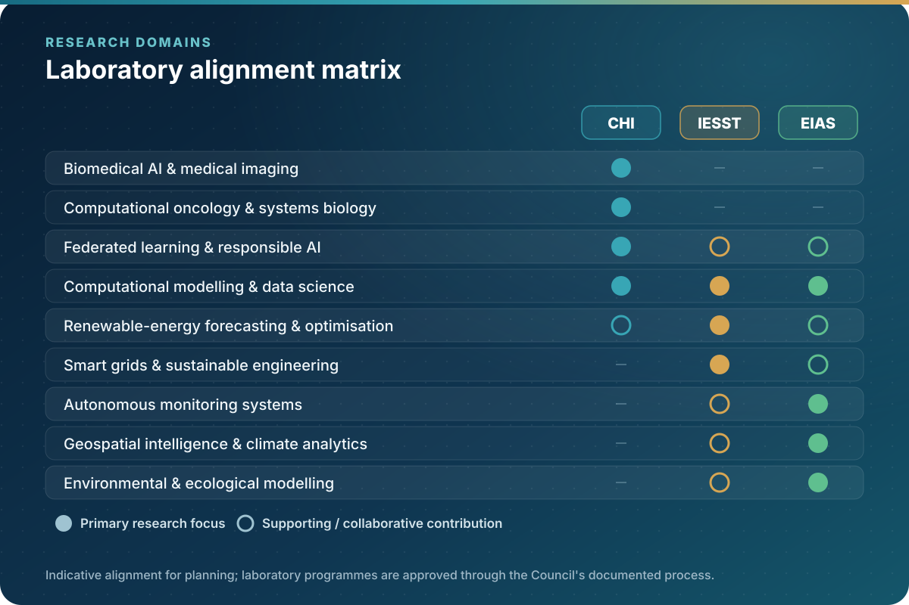
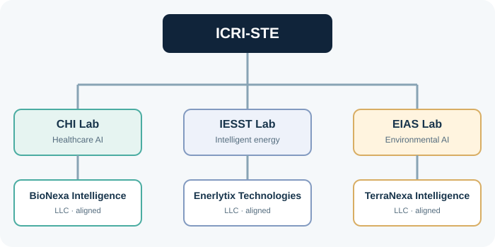

Mission
Advance rigorous, ethical and collaborative research; strengthen scientific capacity; and translate knowledge into responsible technological and societal value.
The institutional framework governing the mission, organisation, research activities, laboratories, professional community and associated innovation ecosystem of the International Council for Research & Innovation in Science, Technology & Engineering.

This is a proposed institutional statutes and governance framework prepared for review and formal adoption. It does not, by itself, establish legal incorporation, charitable status, regulatory approval, or the legal registration of any associated company. Provisions take effect only after approval by the properly authorised ICRI-STE governing authority and must be applied consistently with the laws of the relevant jurisdiction.
ICRI-STE links scientific governance, interdisciplinary laboratories and responsible pathways for translating research into innovation.



ICRI-STE provides an international framework for scientific research, engineering innovation, research training and collaboration. Its work brings together researchers, scientists, technologists, engineers and early-career researchers across computational, biomedical, energy, environmental and other emerging fields.
Advance rigorous, ethical and collaborative research; strengthen scientific capacity; and translate knowledge into responsible technological and societal value.
Build an internationally connected research ecosystem recognised for interdisciplinary excellence, responsible innovation and meaningful research training.
Integrity, academic freedom, inclusion, transparency, accountability, reproducibility, collaboration, sustainability and public benefit.
The following parts set out the proposed constitutional and operational framework. Each provision should be read together with applicable law, approved policies, delegated authorities and any formal resolutions adopted by ICRI-STE.
The organisation shall be known as the International Council for Research & Innovation in Science, Technology & Engineering (ICRI-STE). The name, abbreviation, emblem, official web domains and institutional marks shall be used only in accordance with approved branding and authorisation rules.
ICRI-STE was established in 2024 as an international research and innovation initiative. Its institutional continuity shall be maintained through its approved statutes, governing records, official appointments, policies and documented decisions.
ICRI-STE is a multidisciplinary scientific and professional research organisation. Its activities may include research, development, scientific events, training, publications, academic exchange, technology development and collaborative programmes, subject to applicable law and its adopted governance framework.
The Council shall promote high-quality, ethical and collaborative research and responsible innovation. It shall seek to develop an internationally connected environment in which scientific knowledge, engineering practice and emerging technologies contribute to human, environmental and societal advancement.
All institutional activities shall be guided by scientific integrity, academic freedom, fairness, transparency, accountability, inclusion, sustainability, responsible innovation and respect for intellectual and human rights.
The highest institutional authority shall be the governing body designated in the formally adopted constitution. It shall approve strategic direction, statutes, institutional policies, senior appointments, annual plans and major institutional decisions.
The authorised executive office-holder(s) shall provide institutional leadership, represent ICRI-STE within the limits of delegated authority, oversee implementation of approved strategy and ensure that decisions are properly recorded. The exact titles, appointment method, term and succession arrangements shall be confirmed in the adoption resolution.
An Executive Council may be constituted to coordinate operations, review plans and budgets, monitor institutional performance and advise the governing authority. Its membership, quorum, voting arrangements and delegated powers shall be set out in approved regulations.
The Scientific and Research Council shall advise on research strategy, scientific quality, laboratory development, research assessment, publication standards, ethics and interdisciplinary collaboration. It may establish specialist panels and recommend research priorities.
The Secretariat shall maintain official correspondence, membership records, meeting minutes, institutional registers, policy documents, event records and approved public information. It shall support governance processes and implement administrative decisions.
Standing or temporary committees may be established for finance, research ethics, scientific events, membership, training, quality assurance, digital infrastructure and other defined functions. Every delegation shall be documented, limited in scope and subject to oversight.
Office-holders and committee members shall act in the institutional interest, disclose actual or perceived conflicts, protect confidential information and refrain from exercising authority where impartiality may reasonably be questioned.
ICRI-STE may establish, recognise, restructure or discontinue laboratories through a documented approval process. Each laboratory shall operate within the Council's statutes, research integrity requirements, approved budget and delegated authority. The laboratories below represent the Council's principal interdisciplinary research domains.

Computational healthcare, biomedical artificial intelligence, computational oncology, systems biology, medical data science and trustworthy intelligent healthcare. Research spans biomedical modelling, medical imaging, transcriptomics, federated learning and agentic research platforms.
Explore CHI Lab_Lab.jpeg)
Intelligent energy systems, renewable-energy forecasting and optimisation, smart grids, sustainable engineering and computational energy modelling for efficient and resilient energy technologies.
Research laboratory_Lab.jpeg)
Environmental artificial intelligence, autonomous monitoring, geospatial intelligence, climate and ecological analytics, environmental modelling and sustainable environmental management.
Research laboratoryThe CHI Lab shall advance computational healthcare, biomedical artificial intelligence, computational oncology, systems biology, medical data science, precision-health research and trustworthy intelligent healthcare systems. Its activities may include federated learning, biomedical modelling, medical imaging, transcriptomics and agentic research platforms.
The IESST Lab shall focus on intelligent energy systems, renewable-energy forecasting and optimisation, smart grids, sustainable engineering, computational energy modelling and data-driven technologies supporting efficient and resilient energy systems.
The EIAS Lab shall advance environmental artificial intelligence, autonomous environmental monitoring, geospatial intelligence, climate and ecological analytics, environmental modelling and intelligent systems for sustainable environmental management.
Each laboratory may be led by an appointed Director or equivalent authorised lead. Laboratory leadership shall oversee scientific planning, researcher supervision, project reporting, resource use, research integrity and collaboration. Principal Investigators shall be accountable for the scientific and administrative conduct of their approved projects.
Laboratories shall be encouraged to undertake joint projects, share appropriate expertise and infrastructure, and develop cross-disciplinary programmes. Collaboration shall be governed by written project plans, data-access rules, authorship agreements and intellectual-property arrangements.
New laboratories shall require a proposal describing mission, leadership, research scope, resources, risk, governance and performance measures. Laboratories shall undergo periodic review and may be restructured where their activities no longer meet institutional standards or strategic priorities.
The following entities are associated by research alignment and innovation interests. This association does not, by itself, establish ownership, subsidiary status, agency, partnership, joint venture or financial control by ICRI-STE.
The following innovation entities are presented alongside the research domains with which their activities are thematically aligned.

Computational oncology, biomedical AI, medical imaging, precision medicine, intelligent healthcare platforms, federated learning and responsible AI.
Visit BioNexa
AI-enabled energy optimisation, renewable-energy forecasting, smart-grid analytics, sustainable engineering and intelligent energy technologies.
Visit Enerlytix
Environmental AI, autonomous monitoring, geospatial intelligence, climate analytics and ecological technologies.
Visit TerraNexaInstitutional clarification: These companies are presented as associated innovation entities by research alignment only. This presentation does not imply ownership, subsidiary status, agency, partnership, joint venture or legal control by ICRI-STE. Each entity retains its own legal and financial responsibilities.
Each company shall remain responsible for its own legal status, registration, governance, contracts, employment, taxes, liabilities, finances and regulatory compliance. No company shall represent that ICRI-STE guarantees its obligations unless a valid written instrument expressly provides otherwise.
Any use of ICRI-STE or laboratory names, marks, facilities, data, personnel or intellectual property by an associated entity shall require appropriate written permission or agreement. Research collaboration, licensing, consultancy and technology transfer shall be documented on terms approved by authorised parties.
ICRI-STE may recognise founding, honorary, professional, research, associate, student, early-career and institutional members. Eligibility, application, approval, renewal and termination shall be governed by membership regulations.
A proposed internal grading framework may recognise levels of research responsibility and experience, including R1 (entry or developing researcher), R2 (established researcher), R3 (senior or principal-level researcher), R4 (distinguished or strategic research leader) and R5 (honorary or exceptional institutional recognition). These grades are internal classifications and do not replace academic qualifications, professional licences or employment grades.
ICRI-STE may use an ECR framework to support researchers at different educational and career stages, including undergraduate or bachelor's-level researchers, master's-level researchers and doctoral-level researchers. Subcategories may reflect completion status, experience and demonstrated research contribution. Criteria shall be published and applied consistently.
Members may participate in eligible events, research activities, training and committees in accordance with their category. Members shall uphold the statutes, protect institutional resources, respect colleagues, disclose conflicts and comply with research ethics and publication standards.
Appointments and recognitions shall be based on transparent criteria, documented approval and defined terms. Mentors and supervisors shall provide appropriate guidance, fair evaluation and a safe research environment. Certificates and titles shall accurately describe the authority, scope and duration of the recognition.
ICRI-STE may organise or co-organise conferences, symposia, workshops, seminars, webinars, scientific forums and research presentations. Events shall have defined objectives, organisers, programme details, participant information and appropriate records.
Training programmes shall be designed to strengthen research methods, scientific writing, computational skills, responsible AI, data management, reproducibility, research leadership and professional development. Learning outcomes and evaluation criteria should be stated in advance.
Institutional publications shall meet appropriate standards of originality, accuracy, attribution, peer review where applicable and disclosure. ICRI-STE affiliation may be used only where the individual has a legitimate institutional relationship and the relevant contribution and affiliation are accurately represented.
Authorship shall reflect substantial scholarly contribution and accountability. Contributions that do not meet authorship criteria should be acknowledged appropriately. Guest, gift, ghost and coercive authorship are prohibited.
Researchers shall maintain honest, rigorous and transparent research practices. Fabrication, falsification, plagiarism, manipulation of results, undisclosed duplicate publication, and deliberate misrepresentation of methods or findings are prohibited.
Research involving human participants, identifiable personal data, clinical records or human biological materials shall obtain the required ethics review, approvals, informed consent or lawful basis, privacy protections and institutional permissions before research begins.
Any animal research or work involving biological, chemical or other hazards shall comply with applicable law, recognised ethical principles, institutional approvals, risk assessments and safety procedures.
AI systems developed or used under ICRI-STE activities shall be assessed for validity, reliability, fairness, explainability appropriate to context, privacy, security, robustness, human oversight and foreseeable harm. High-impact or safety-critical use requires enhanced review.
Research data shall be collected, processed, stored, shared, retained and disposed of lawfully and securely. Data management plans shall address provenance, access controls, confidentiality, anonymisation or pseudonymisation, backup, retention and reproducibility.
ICRI-STE encourages responsible sharing of publications, methods, code and data where lawful and ethically appropriate. Open-science commitments shall not override privacy, consent, security, confidentiality, intellectual-property rights or contractual restrictions.
ICRI-STE may collaborate with universities, research institutes, public bodies, professional organisations, industry partners, non-governmental organisations and independent researchers, subject to due diligence and institutional approval.
Material collaborations shall be governed by written agreements defining scope, responsibilities, funding, deliverables, governance, data access, confidentiality, intellectual property, publication, liability, duration and termination.
Cross-border activities shall consider applicable laws, export controls, sanctions, data-transfer rules, research ethics requirements and local institutional approvals. No partnership shall be announced as formal until authorised and documented.
Official websites, repositories, event portals, document viewers, communication channels and digital research environments shall be managed under institutional authority. Content shall be accurate, accessible, secure and regularly reviewed.
Systems shall use appropriate authentication, role-based access, backups, security updates and incident response procedures. Users shall protect credentials and report suspected security incidents promptly.
Official digital records shall be retained according to approved retention schedules and applicable legal requirements. Access, modification and disposal of records shall be controlled and auditable.
Institutional funds and resources shall be managed prudently, transparently and solely for authorised institutional purposes. Financial commitments shall be approved by officers with documented delegated authority.
Annual or programme budgets shall be prepared, reviewed and approved through the governance process. Accurate accounts and supporting records shall be maintained, with appropriate separation of duties and periodic financial reporting.
Grants, sponsorships, donations, fees and other funding shall be accepted only after review of their conditions, source, reputational implications, conflicts and compliance obligations. Funds shall be used consistently with their approved purpose.
ICRI-STE funds shall not be commingled with the accounts of BioNexa Intelligence, LLC, Enerlytix Technologies, LLC or TerraNexa Intelligence, LLC. Any transaction between the Council and an associated entity shall be documented, appropriately authorised and conducted on clear terms.
All members, office-holders, researchers, volunteers and representatives shall act professionally, respectfully and lawfully. Harassment, discrimination, bullying, retaliation, misuse of authority, fraud and deliberate damage to institutional reputation are prohibited.
Complaints shall be received through a documented process, assessed impartially and handled confidentially to the extent possible. Investigations shall provide procedural fairness, an opportunity to respond and protection against retaliation.
Where a breach is established, proportionate measures may include advice, written warning, suspension of privileges, removal from a role, termination of membership or referral to a competent authority. An appeal route shall be available under approved procedures.
Governing bodies and committees shall meet at intervals appropriate to their responsibilities. Meetings may be held in person or by secure electronic means where permitted by the applicable rules.
Meeting notices, agendas, quorum requirements, voting methods, conflict declarations and decision procedures shall be specified in the relevant regulations. Decisions shall be recorded accurately and circulated to authorised recipients.
The Secretariat shall maintain the current statutes, policies, registers, appointment records, minutes, resolutions, agreements and other official records. Approved records shall be protected against unauthorised alteration or disclosure.
ICRI-STE shall periodically evaluate its research, training, events, partnerships, membership development, governance and resource management against documented objectives and measurable indicators.
Laboratories and programmes shall report on scientific outputs, research quality, training, collaboration, ethics compliance, resource use and progress against approved plans. Reviews should identify strengths, risks and improvement actions.
An annual institutional report may summarise governance activity, research outputs, events, training, partnerships, membership, financial information where appropriate, and strategic priorities for the next period.
ICRI-STE and its representatives shall comply with applicable laws and regulatory requirements in each jurisdiction in which activities are undertaken. The legal form and registration status of the Council must be accurately represented in public communications and agreements.
These statutes may be amended only through a formal proposal, appropriate notice, review and approval by the authorised governing body in accordance with the amendment procedure adopted by ICRI-STE. Each approved amendment shall be dated, version-controlled and archived.
Institutional succession, temporary delegation, vacancy management and transfer of records shall be governed by written procedures that preserve continuity, accountability and lawful control of institutional assets.
Any suspension or dissolution shall require a properly authorised resolution and compliance with applicable law, contractual obligations, funding conditions, data-protection requirements and the responsible disposition of records and assets.
Headings are for convenience and do not alter the meaning of the provisions. Where a provision conflicts with applicable law, the law shall prevail and the remaining provisions shall continue to operate to the extent possible.
The governing authority may approve subordinate regulations, policies, standard operating procedures and schedules to implement these statutes. Such instruments shall be consistent with the statutes and shall identify their approval authority and effective date.
This website edition is a proposed framework. It shall become the operative institutional statutes only on the date of formal adoption recorded in the official resolution and approval register.
Resolved that the ICRI-STE Statutes, Constitution, Governance and Institutional Operational Regulations be adopted as the governing framework of the Council, subject to confirmation of the organisation's legal form, jurisdiction, authorised office-holders, membership rules and any required external registrations.
The office-holder's title and authority should be inserted only after formal confirmation. This page intentionally does not presume an unverified Founder/President designation.


For practical implementation, the Council should maintain separate controlled documents covering: governance and delegations; membership and professional grades; ECR appointments; laboratory operations; project approval and PI responsibilities; research ethics; responsible AI and data governance; IP and technology transfer; events and training; publications and authorship; finance and procurement; conflicts of interest; complaints and appeals; digital security; records retention; partnerships and MoUs; quality assurance; communications and branding; and amendment/version control.